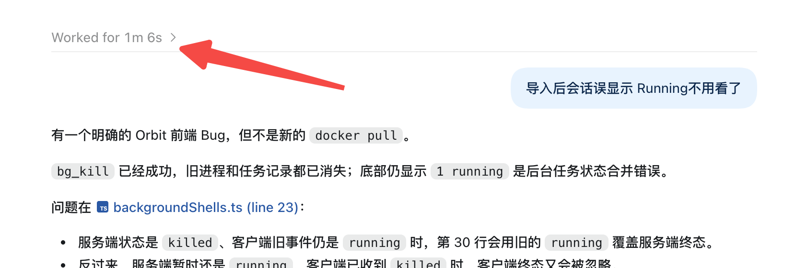
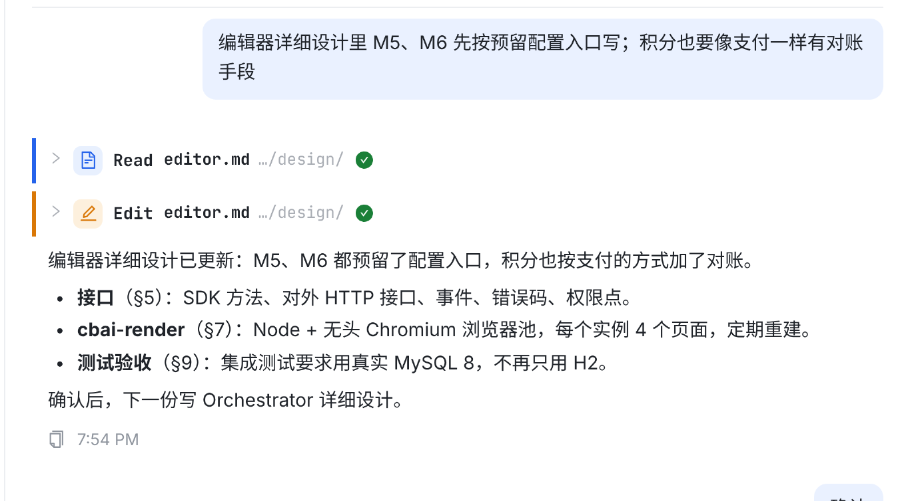
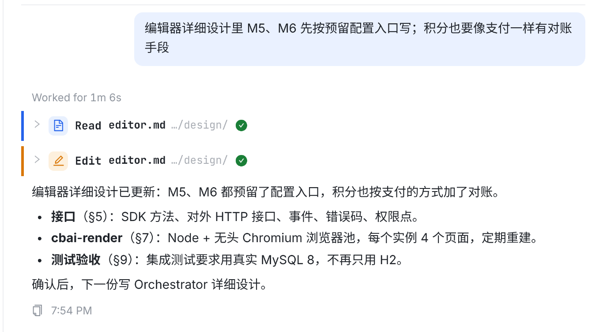
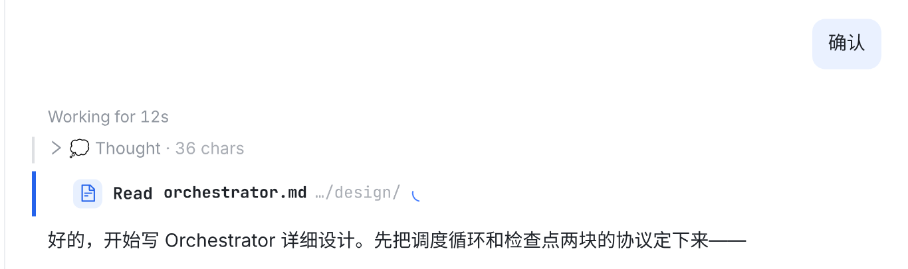
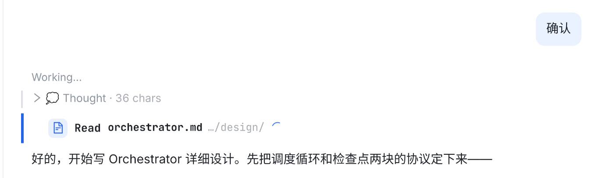
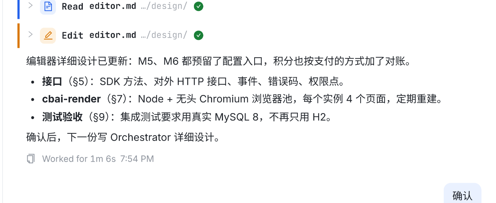
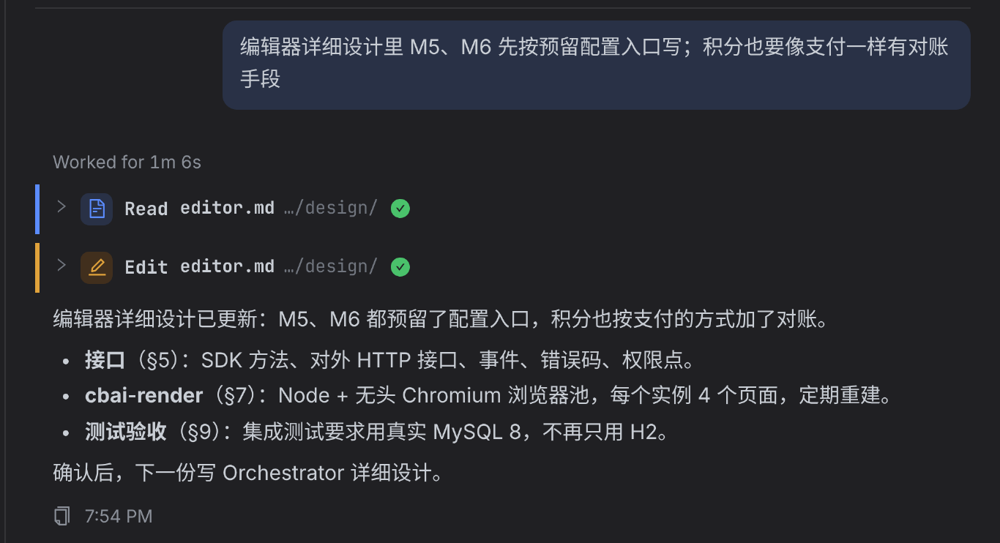
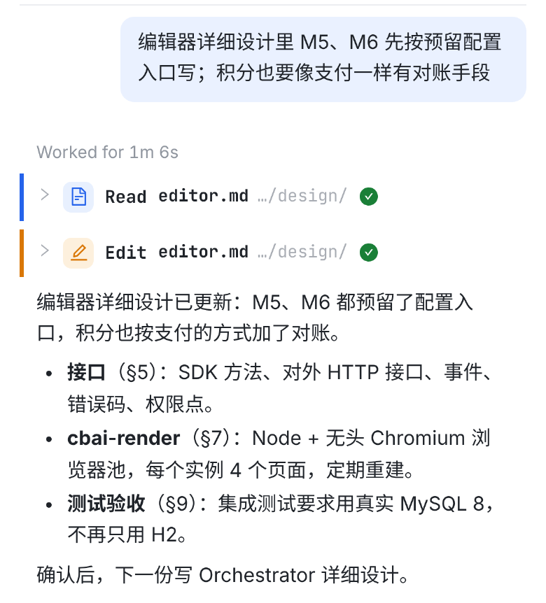

你要在输出内容上方加一行工作时间，区分工作中和已完成，参考 Codex 的
Worked for 1m 6s；历史消息（只有 worked for xxx 的那种）也要有。下面每一张都是真实页面的截图
（vite + 仓库里 ui-migration 的 fixture，对话照你截图里那轮造的）：改前是这个工作树在 main 5b5304839 上、
把新行藏掉拍的，改后是同一份代码加了这一行跑出来的，不是画的。虚线和编号是标注。
只改 Web，服务器不用动：两个时间点都是这一轮自己的事件——你那条消息的时间（user）到回合结束（turn_end），
都存在库里，所以刷新、换设备、翻历史读到的和当时屏幕上一样。

你圈的 Worked for 1m 6s：一行灰字，完成的一轮才有； 正在跑的那一轮 Codex 显示的是 Working 状态。

这一轮做了什么、花多久，读完也不知道；要判断「刚才那个卡了没有」只能看下面的 7:54 PM 自己减。

<1新增一行在你的消息下面、这一轮所有输出（思考、工具卡片、回答文字）上面，左边缘和回答文字对齐。灰色小字，和用户气泡下面的时间同一个样式； 一直显示，不用悬停。时长从你发消息到这一轮结束，格式和 Thought for 12s 一处来：12s / 1m 6s / 2h 5m。底部那行 copy · 时间原样不动。

<2进行中正在跑的这一轮：同一行改成 Working，从你发消息开始跳秒，跑完的那一下变成 Worked for …，数字不跳变。 起头时间存在事件里，所以中途刷新、换设备打开也照样对得上；只有没有时间戳的极老事件才退化成 Working…，不猜一个数。

<3同一条位置，不显示秒数。好处是安静、刷新前后完全一样；坏处是长任务看不出还在不在动（下面回答还在长，但一眼只看到三个点）。

<4第二种放法就是你截图里的位置（回答末尾）。省一行高度，但进行中的那一轮没有这一行可放——回合没结束就没有底部那行， 所以「Working for 12s」要么另外显示在别处、要么结束时跳一下；而且读完才知道花了多久。
| 这一轮 | 这一行 |
|---|---|
| 已完成 | Worked for 1m 6s（刷新、换设备、翻历史都一样） |
| 进行中 | Working for 12s，每秒刷新；起头时间缺失时 Working… |
| 失败/中断 | 照写 Worked for 3s（上面是它自己的错误行） |
| 中途崩了 （没有回合结束） | 什么都不写——不知道花了多久，就不编一个 |
| 子 agent 的消息 | 没有这一行（那是工具卡片里的内容，不是一轮） |
| steer（插话） | 不单独开一轮，跟着它加入的那一轮 |
实现上还有一个细节：这一行不占 data-seq，⌘F 定位、深链接、读到哪里都还是落在你那条消息的气泡上，和现在一样。

<5
<6深色下用同一套 --text-3 灰，和底部时间一样；手机上这一行不换行、不挤压回答。
原生客户端（macOS / iOS / Android）这次不动——上一轮「copy · 时间」也只做了 Web。